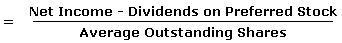

The portion of a company's profit allocated to each outstanding share of common stock. Earnings per share serves as an indicator of a company's profitability.
Calculated as:
When calculating, it is more accurate to use a weighted average number of shares outstanding over the reporting term, because the number of shares outstanding can change over time. However, data sources sometimes simplify the calculation by using the number of shares outstanding at the end of the period.
Diluted EPS expands on basic EPS by including the shares of convertibles or warrants outstanding in the outstanding shares number.
Earnings per share is generally considered to be the single most important variable in determining a share's price. It is also a major component used to calculate the price-to-earnings valuation ratio.
For example, assume that a company has a net income of $25 million. If the company pays out $1 million in preferred dividends and has 10 million shares for half of the year and 15 million shares for the other half, the EPS would be $1.92 (24/12.5). First, the $1 million is deducted from the net income to get $24 million, then a weighted average is taken to find the number of shares outstanding (0.5 x 10M+ 0.5 x 15M = 12.5M).
An important aspect of EPS that's often ignored is the capital that is required to generate the earnings (net income) in the calculation. Two companies could generate the same EPS number, but one could do so with less equity (investment) - that company would be more efficient at using its capital to generate income and, all other things being equal, would be a "better" company. Investors also need to be aware of earnings manipulation that will affect the quality of the earnings number. It is important not to rely on any one financial measure, but to use it in conjunction with statement analysis and other measures.
{kind=link}